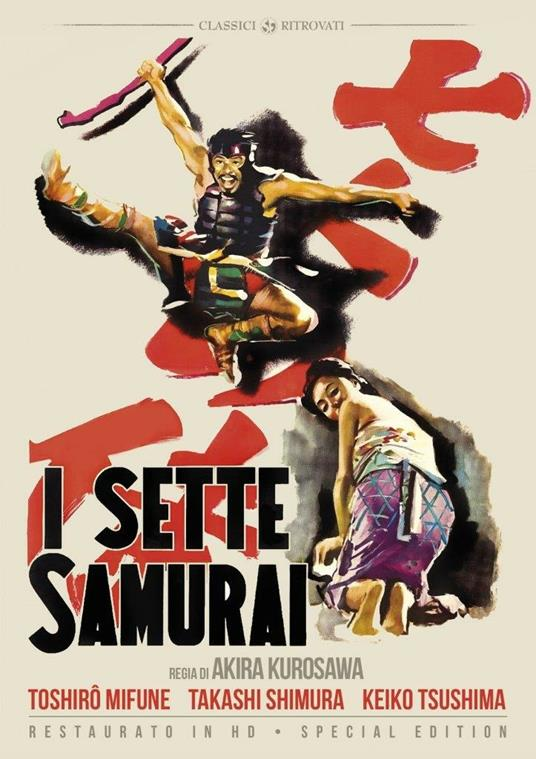

Influenza nella Cultura Moderna
L'immagine dei samurai continua a permeare la cultura globale. La loro estetica armature, spade katana, disciplina marziale e i loro valori di onore e sacrificio li hanno resi protagonisti di opere artistiche di ogni genere, dal cinema ai videogiochi. Nel cinema, registi come **Akira Kurosawa** hanno contribuito a costruire l'immaginario moderno del samurai.
Il suo film *I sette samurai* (1954) è considerato un capolavoro mondiale e ha ispirato il western americano *I magnifici sette*. Anche *Yojimbo* e *Ran* hanno influenzato autori occidentali come George Lucas (*Star Wars*) e Sergio Leone. Negli anime e nei manga, il samurai è spesso reinterpretato in chiave moderna o fantastica: *Rurouni Kenshin* unisce storia e romanticismo, *Samurai Champloo* mescola cultura hip-hop e periodo Edo, mentre *Afro Samurai* (doppiato da Samuel L. Jackson) fonde estetica nipponica e cultura afroamericana.

In tutti questi casi, il samurai diventa simbolo di lotta interiore, ricerca di riscatto e autodisciplina. Anche nel mondo dei videogiochi il samurai è una figura ricorrente: *Ghost of Tsushima* (2020) ha riportato in auge l'epica guerriera giapponese con attenzione ai dettagli storici e paesaggistici.

Altri titoli come *Nioh*, *Sekiro: Shadows Die Twice* e *Total War: Shogun 2* mostrano la continuità del fascino samuraico nel medium interattivo. Fuori dal Giappone, l'immagine del samurai ha influenzato il concetto stesso di "guerriero onorevole” in molte culture. Supereroi, cavalieri, ninja e persino Jedi di *Star Wars* derivano in parte dai valori e dall'estetica samurai. In ambito aziendale, la dedizione al lavoro e la lealtà verso l'impresa sono spesso descritti come una forma moderna di Bushidō.
Fonti:
Wikipedia.org Japanesesword.net
Torna alla home page →